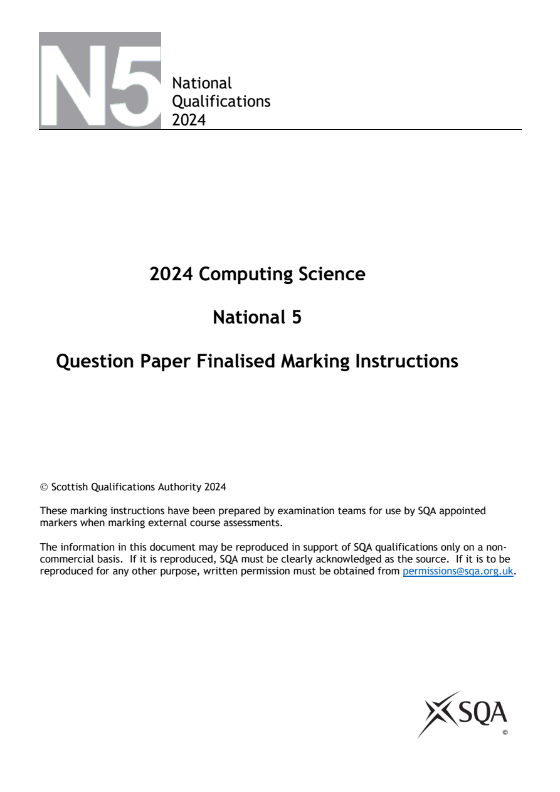
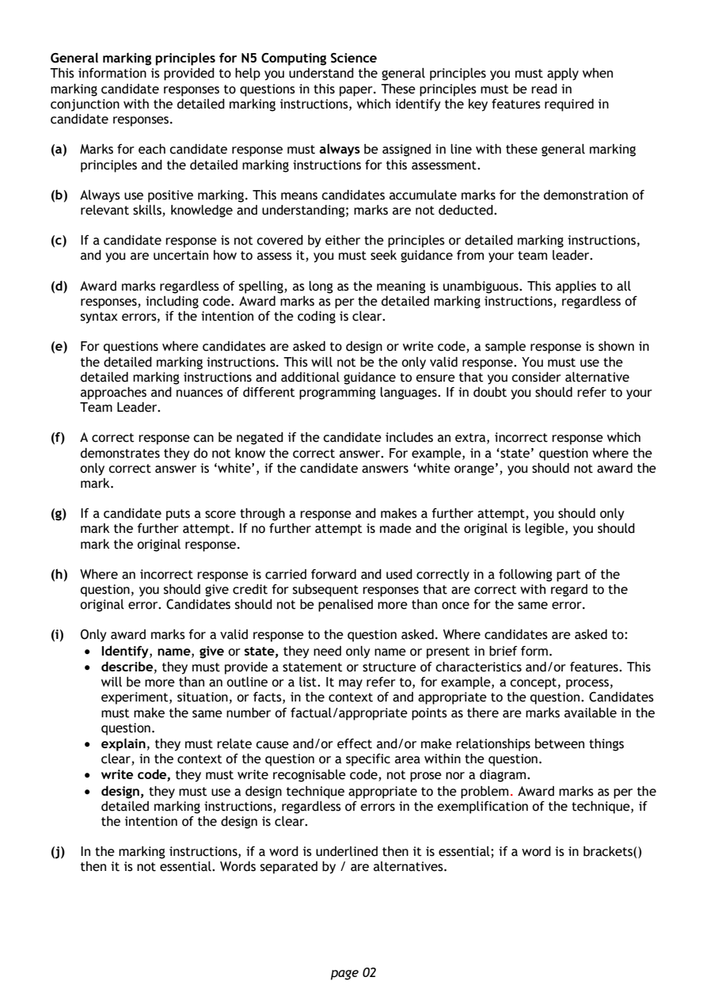
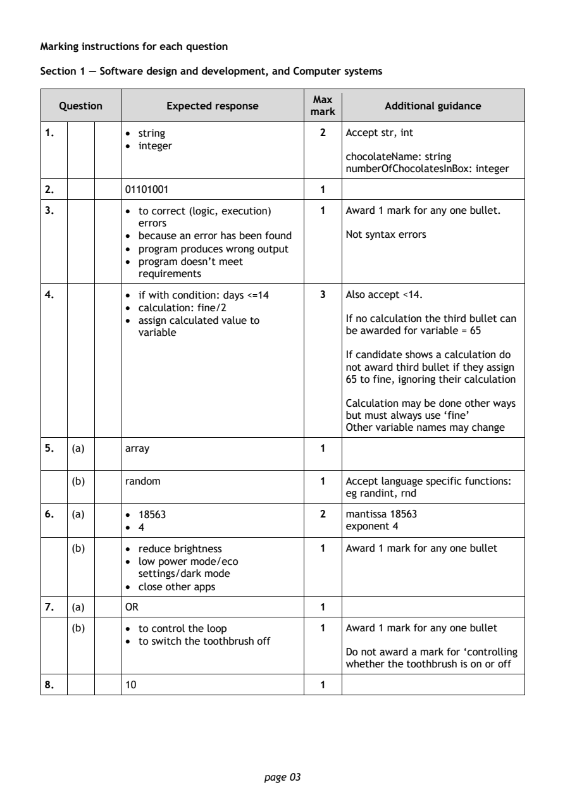
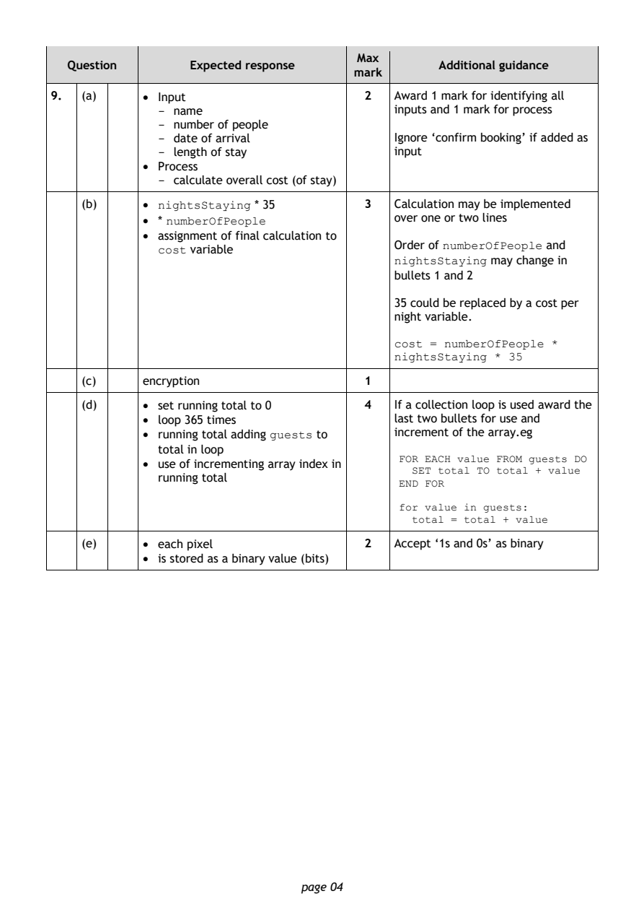
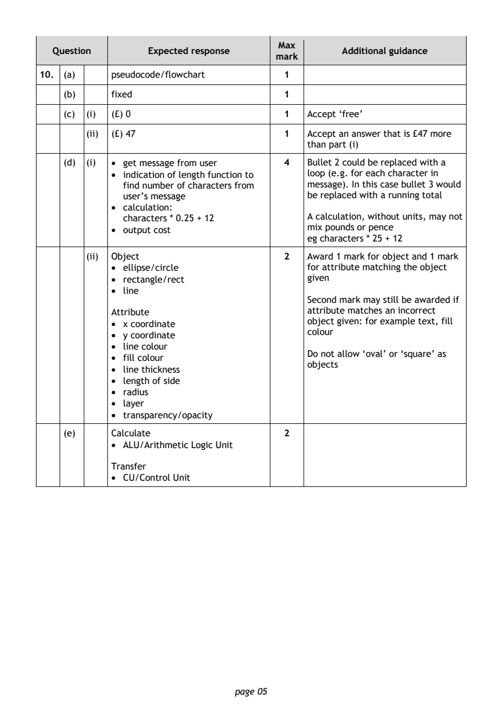
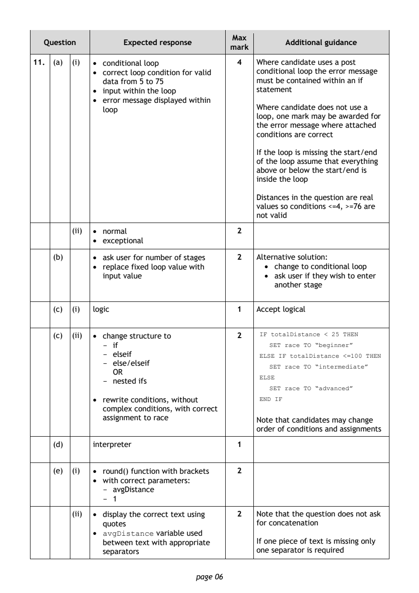
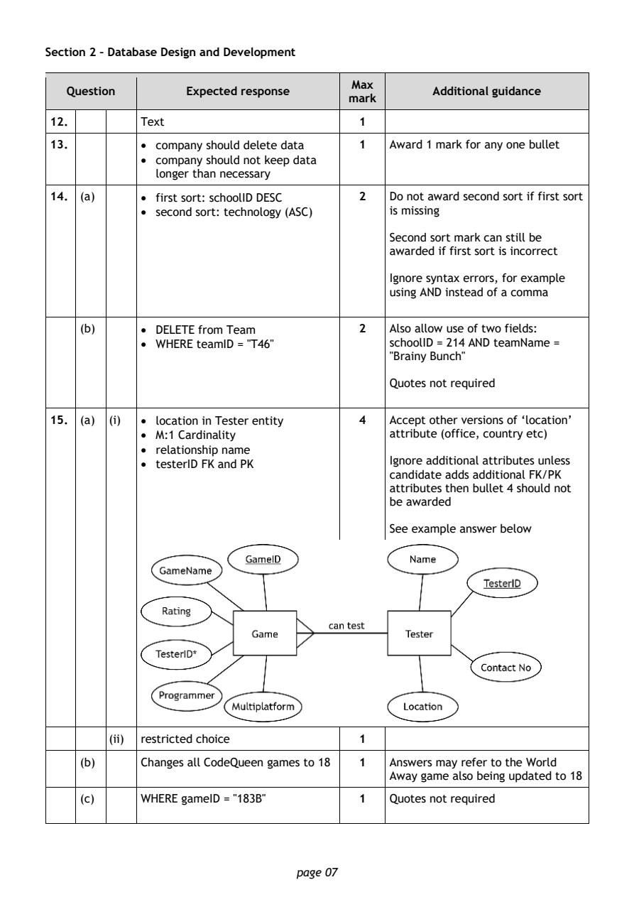
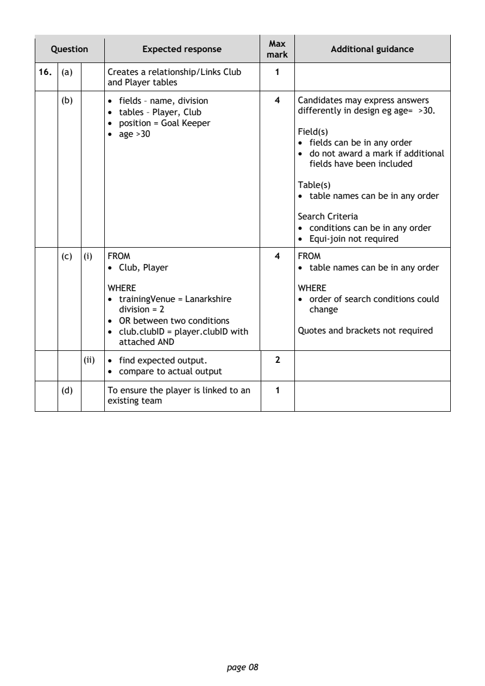
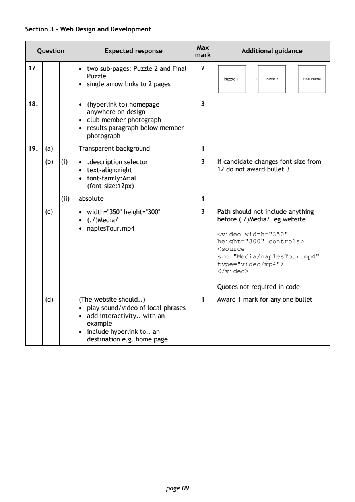
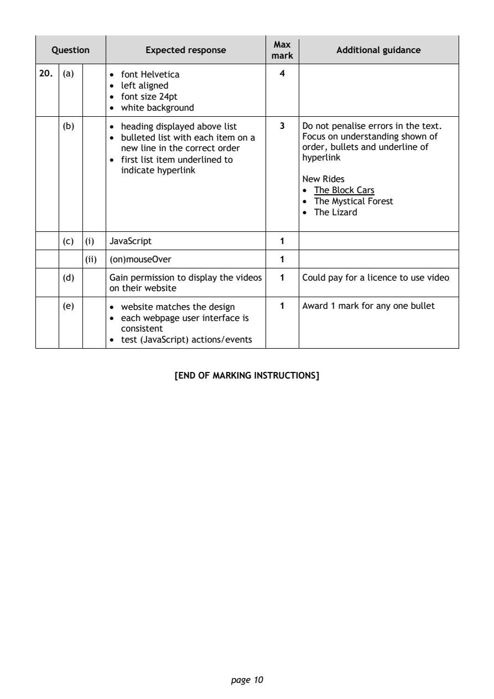

2024 National 5 Computing Science marking instructions
Source: Scottish Qualifications Authority (SQA) / Qualifications Scotland. This is a StemInteract HTML companion, not an official HTML edition. Selectable text is supplied alongside original page images. Use the images or original PDF for equations, powers, fractions, vector notation, tables and diagrams; text extraction cannot fully preserve mathematical layout.
Jump to a question
PDF page 1

Selectable page text
National
Qualifications
2024
2024 Computing Science
National 5
Question Paper Finalised Marking Instructions
© Scottish Qualifications Authority 2024
These marking instructions have been prepared by examination teams for use by SQA appointed
markers when marking external course assessments.
The information in this document may be reproduced in support of SQA qualifications only on a non-
commercial basis. If it is reproduced, SQA must be clearly acknowledged as the source. If it is to be
reproduced for any other purpose, written permission must be obtained from permissions@sqa.org.uk.PDF page 2

Selectable page text
General marking principles for N5 Computing Science
This information is provided to help you understand the general principles you must apply when
marking candidate responses to questions in this paper. These principles must be read in
conjunction with the detailed marking instructions, which identify the key features required in
candidate responses.
(a) Marks for each candidate response must always be assigned in line with these general marking
principles and the detailed marking instructions for this assessment.
(b) Always use positive marking. This means candidates accumulate marks for the demonstration of
relevant skills, knowledge and understanding; marks are not deducted.
(c) If a candidate response is not covered by either the principles or detailed marking instructions,
and you are uncertain how to assess it, you must seek guidance from your team leader.
(d) Award marks regardless of spelling, as long as the meaning is unambiguous. This applies to all
responses, including code. Award marks as per the detailed marking instructions, regardless of
syntax errors, if the intention of the coding is clear.
(e) For questions where candidates are asked to design or write code, a sample response is shown in
the detailed marking instructions. This will not be the only valid response. You must use the
detailed marking instructions and additional guidance to ensure that you consider alternative
approaches and nuances of different programming languages. If in doubt you should refer to your
Team Leader.
(f) A correct response can be negated if the candidate includes an extra, incorrect response which
demonstrates they do not know the correct answer. For example, in a ‘state’ question where the
only correct answer is ‘white’, if the candidate answers ‘white orange’, you should not award the
mark.
(g) If a candidate puts a score through a response and makes a further attempt, you should only
mark the further attempt. If no further attempt is made and the original is legible, you should
mark the original response.
(h) Where an incorrect response is carried forward and used correctly in a following part of the
question, you should give credit for subsequent responses that are correct with regard to the
original error. Candidates should not be penalised more than once for the same error.
(i) Only award marks for a valid response to the question asked. Where candidates are asked to:
• Identify, name, give or state, they need only name or present in brief form.
• describe, they must provide a statement or structure of characteristics and/or features. This
will be more than an outline or a list. It may refer to, for example, a concept, process,
experiment, situation, or facts, in the context of and appropriate to the question. Candidates
must make the same number of factual/appropriate points as there are marks available in the
question.
• explain, they must relate cause and/or effect and/or make relationships between things
clear, in the context of the question or a specific area within the question.
• write code, they must write recognisable code, not prose nor a diagram.
• design, they must use a design technique appropriate to the problem. Award marks as per the
detailed marking instructions, regardless of errors in the exemplification of the technique, if
the intention of the design is clear.
(j) In the marking instructions, if a word is underlined then it is essential; if a word is in brackets()
then it is not essential. Words separated by / are alternatives.
page 02PDF page 3
Question 1Question 2Question 3Question 4Question 5Question 6Question 7Question 8
Selectable page text
Marking instructions for each question
Section 1 — Software design and development, and Computer systems
Max
Question Expected response Additional guidance
mark
1. • string 2 Accept str, int
• integer
chocolateName: string
numberOfChocolatesInBox: integer
2. 01101001 1
3. • to correct (logic, execution) 1 Award 1 mark for any one bullet.
errors
• because an error has been found Not syntax errors
• program produces wrong output
• program doesn’t meet
requirements
4. • if with condition: days <=14 3 Also accept <14.
• calculation: fine/2
• assign calculated value to If no calculation the third bullet can
variable be awarded for variable = 65
If candidate shows a calculation do
not award third bullet if they assign
65 to fine, ignoring their calculation
Calculation may be done other ways
but must always use ‘fine’
Other variable names may change
5. (a) array 1
(b) rando(m 1 Accept language specific functions:
eg randint, rnd
6. (a) • 18563 2 mantissa 18563
• 4 exponent 4
(b) • reduce brightness 1 Award 1 mark for any one bullet
• low power mode/eco
settings/dark mode
• close other apps
7. (a) OR 1
(b) • to control the loop 1 Award 1 mark for any one bullet
• to switch the toothbrush off
Do not award a mark for ‘controlling
whether the toothbrush is on or off
8. 10 1
page 03PDF page 4
Question 9
Selectable page text
Max
Question Expected response Additional guidance
mark
9. (a) • Input 2 Award 1 mark for identifying all
- name inputs and 1 mark for process
- number of people
- date of arrival Ignore ‘confirm booking’ if added as
- length of stay input
• Process
- calculate overall cost (of stay)
(b) • nightsStaying * 35 3 Calculation may be implemented
• * numberOfPeople over one or two lines
• assignment of final calculation to
Order of numberOfPeople and
cost variable
nightsStaying may change in
bullets 1 and 2
35 could be replaced by a cost per
night variable.
cost = numberOfPeople *
nightsStaying * 35
(c) encryption 1
(d) • set running total to 0 4 If a collection loop is used award the
• loop 365 times last two bullets for use and
• running total adding guests to increment of the array.eg
total in loop
FOR EACH value FROM guests DO
• use of incrementing array index in
SET total TO total + value
running total
END FOR
for value in guests:
total = total + value
(e) • each pixel 2 Accept ‘1s and 0s’ as binary
• is stored as a binary value (bits)
page 04PDF page 5
Question 10
Selectable page text
Max
Question Expected response Additional guidance
mark
10. (a) pseudocode/flowchart 1
(b) fixed 1
(c) (i) (£) 0 1 Accept ‘free’
(ii) (£) 47 1 Accept an answer that is £47 more
than part (i)
(d) (i) • get message from user 4 Bullet 2 could be replaced with a
• indication of length function to loop (e.g. for each character in
find number of characters from message). In this case bullet 3 would
user’s message be replaced with a running total
• calculation:
characters * 0.25 + 12 A calculation, without units, may not
• output cost mix pounds or pence
eg characters * 25 + 12
(ii) Object 2 Award 1 mark for object and 1 mark
• ellipse/circle for attribute matching the object
• rectangle/rect given
• line
Second mark may still be awarded if
Attribute attribute matches an incorrect
• x coordinate object given: for example text, fill
colour
• y coordinate
• line colour
Do not allow ‘oval’ or ‘square’ as
• fill colour
objects
• line thickness
• length of side
• radius
• layer
• transparency/opacity
(e) Calculate 2
• ALU/Arithmetic Logic Unit
Transfer
• CU/Control Unit
page 05PDF page 6
Question 11
Selectable page text
Max
Question Expected response Additional guidance
mark
11. (a) (i) • conditional loop 4 Where candidate uses a post
• correct loop condition for valid conditional loop the error message
data from 5 to 75 must be contained within an if
• input within the loop statement
• error message displayed within
loop Where candidate does not use a
loop, one mark may be awarded for
the error message where attached
conditions are correct
If the loop is missing the start/end
of the loop assume that everything
above or below the start/end is
inside the loop
Distances in the question are real
values so conditions <=4, >=76 are
not valid
(ii) • normal 2
• exceptional
(b) • ask user for number of stages 2 Alternative solution:
• replace fixed loop value with • change to conditional loop
input value • ask user if they wish to enter
another stage
(c) (i) logic 1 Accept logical
(c) (ii) • change structure to 2 IF totalDistance < 25 THEN
- if SET race TO “beginner”
- elseif ELSE IF totalDistance <=100 THEN
- else/elseif
SET race TO “intermediate”
OR
ELSE
- nested ifs
SET race TO “advanced”
• rewrite conditions, without END IF
complex conditions, with correct
assignment to race
Note that candidates may change
order of conditions and assignments
(d) interpreter 1
(e) (i) • round() function with brackets 2
• with correct parameters:
- avgDistance
- 1
(ii) • display the correct text using 2 Note that the question does not ask
quotes for concatenation
• avgDistance variable used
between text with appropriate If one piece of text is missing only
separators one separator is required
page 06PDF page 7
Question 12Question 13Question 14Question 15
Selectable page text
Section 2 – Database Design and Development
Max
Question Expected response Additional guidance
mark
12. Text 1
13. • company should delete data 1 Award 1 mark for any one bullet
• company should not keep data
longer than necessary
14. (a) • first sort: schoolID DESC 2 Do not award second sort if first sort
• second sort: technology (ASC) is missing
Second sort mark can still be
awarded if first sort is incorrect
Ignore syntax errors, for example
using AND instead of a comma
(b) • DELETE from Team 2 Also allow use of two fields:
• WHERE teamID = "T46" schoolID = 214 AND teamName =
"Brainy Bunch"
Quotes not required
15. (a) (i) • location in Tester entity 4 Accept other versions of ‘location’
• M:1 Cardinality attribute (office, country etc)
• relationship name
• testerID FK and PK Ignore additional attributes unless
candidate adds additional FK/PK
attributes then bullet 4 should not
be awarded
S ee example answer below
(ii) restricted choice 1
(b) Changes all CodeQueen games to 18 1 Answers may refer to the World
Away game also being updated to 18
(c) WHERE gameID = "183B" 1 Quotes not required
page 07PDF page 8
Question 16
Selectable page text
Max
Question Expected response Additional guidance
mark
16. (a) Creates a relationship/Links Club 1
and Player tables
(b) • fields – name, division 4 Candidates may express answers
• tables – Player, Club differently in design eg age= >30.
• position = Goal Keeper
• age >30 Field(s)
• fields can be in any order
• do not award a mark if additional
fields have been included
Table(s)
• table names can be in any order
Search Criteria
• conditions can be in any order
• Equi-join not required
(c) (i) FROM 4 FROM
• Club, Player • table names can be in any order
WHERE WHERE
• trainingVenue = Lanarkshire • order of search conditions could
division = 2 change
• OR between two conditions
• club.clubID = player.clubID with Quotes and brackets not required
attached AND
(ii) • find expected output. 2
• compare to actual output
(d) To ensure the player is linked to an 1
existing team
page 08PDF page 9
Question 17Question 18Question 19
Selectable page text
Section 3 – Web Design and Development
Max
Question Expected response Additional guidance
mark
17. • two sub-pages: Puzzle 2 and Final 2
Puzzle
• single arrow links to 2 pages
18. • (hyperlink to) homepage 3
anywhere on design
• club member photograph
• results paragraph below member
photograph
19. (a) Transparent background 1
(b) (i) • .description selector 3 If candidate changes font size from
• text-align:right 1 2 do not award bullet 3
• font-family:Arial
(font-size:12px)
(ii) absolute 1
(c) • width="350" height="300" 3 Path should not include anything
• (./)Media/ before (./)Media/ eg website
• naplesTour.mp4
<video width="350"
height="300" controls>
<source
src="Media/naplesTour.mp4"
type="video/mp4">
</video>
Quotes not required in code
(d) (The website should..) 1 Award 1 mark for any one bullet
• play sound/video of local phrases
• add interactivity.. with an
example
• include hyperlink to.. an
destination e.g. home page
page 09PDF page 10
Question 20
Selectable page text
Max
Question Expected response Additional guidance
mark
20. (a) • font Helvetica 4
• left aligned
• font size 24pt
• white background
(b) • heading displayed above list 3 Do not penalise errors in the text.
• bulleted list with each item on a Focus on understanding shown of
new line in the correct order order, bullets and underline of
• first list item underlined to hyperlink
indicate hyperlink
New Rides
• The Block Cars
• The Mystical Forest
• The Lizard
(c) (i) JavaScript 1
(ii) (on)mouseOver 1
(d) Gain permission to display the videos 1 Could pay for a licence to use video
on their website
(e) • website matches the design 1 Award 1 mark for any one bullet
• each webpage user interface is
consistent
• test (JavaScript) actions/events
[END OF MARKING INSTRUCTIONS]
page 10